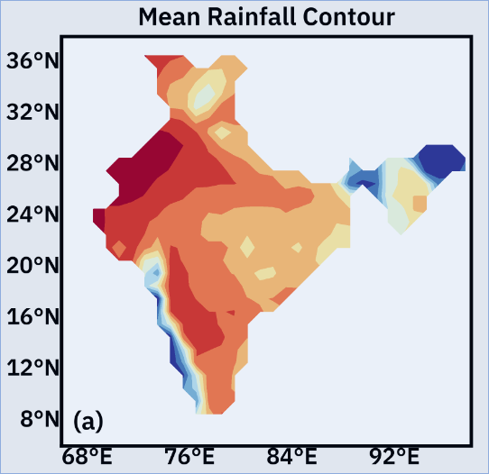
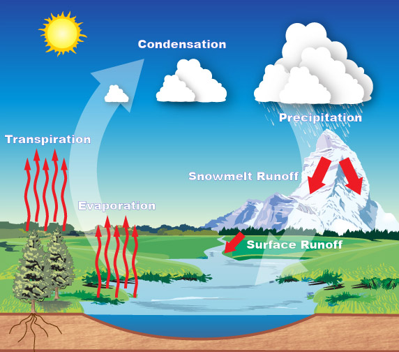
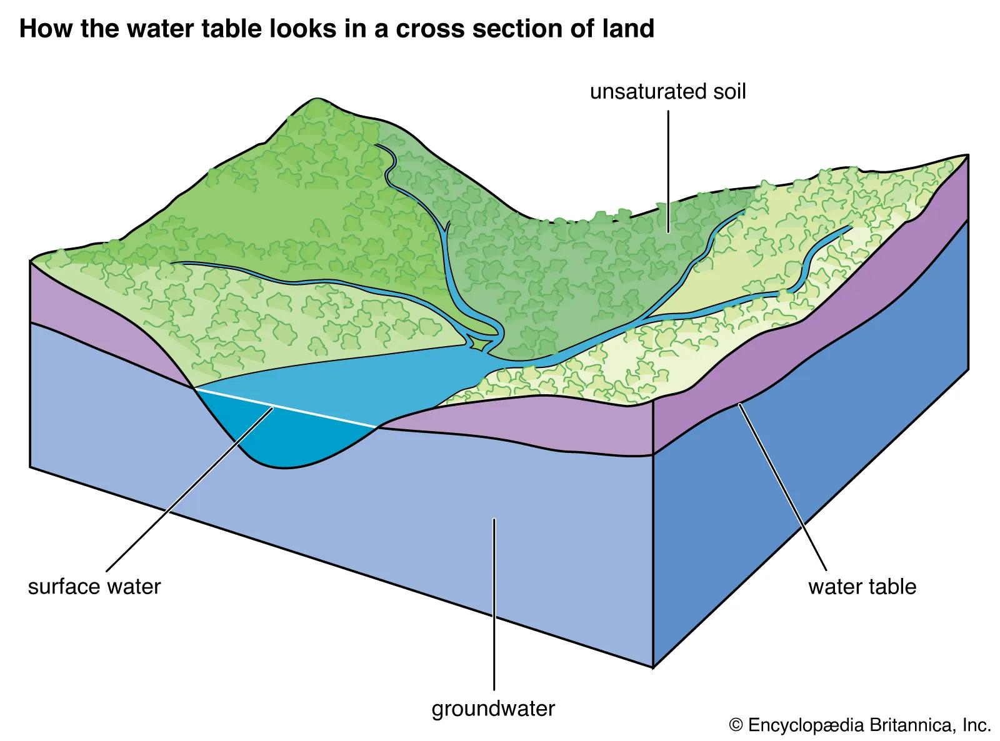

These are some of the resources available for download.
This is the presenatation I made for my talk at SKDAV Polytehcnic college, Rourkela. It is a graduate level intro to the fundamentals og RS/GIS.
Download PDF
Custom codes for plotting climate data using Jupyter/Python. You can also access them on the Github repo for forking/downloading.
Jupyter Notebook-1 Jupyter Notebook-2
These are my handwritten notes of Surface water hydrology based on lectures taught at IISc. You can download the PDF or the raw .xoj files (for editing). You will need Xjournal, an open source app to open the .xoj files.
Download PDF Download .xoj fileThese are my handwritten notes of Surface water hydrology based on lectures taught at IISc. You can download the PDF or the raw .xoj files (for editing). You will need Xjournal, an open source app to open the .xoj files.
Download PDF Download .xoj file
These are my handwritten notes of groundwater hydrology based on lectures taught at IISc. You can download the PDF or the raw .xopp files (for editing). You will need Xjournal++, an open source app to open the .xopp/.xoj files.
Download PDF Download .xoj/.xopp file